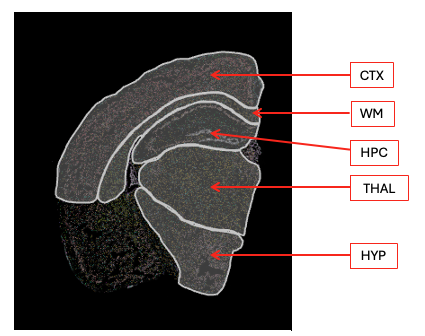

# BiocManager::install("speckle")# https://bioconductor.org/packages/devel/bioc/vignettes/speckle/inst/doc/speckle.htmllibrary(qs2)library(Seurat)library(tidyverse) library(speckle)library(kableExtra)immune <-UpdateSeuratObject(qs_read("seurat_objects/20260225-mg_kai.qs2"))Idents(immune) <-"sub.cluster"# Order samples by Treatment.Group so groups are adjacentimmune$sample_ID <-factor( immune$sample_ID,levels =c("KK4_465", "KK4_504", "KK4_496", "KK4_492", "KK4_502", "KK4_464"))
The function propeller from the speckl package tests whether cell-type proportions differ between experimental conditions, while properly accounting for biological replication and sample-to-sample variability.
aggregates single cells into sample-level cell-type proportions,
applies a variance-stabilizing transformation (e.g. logit or arcsin),
fits a linear model for each cell type,
uses empirical Bayes moderation to stabilize variance estimates across cell types, and
controls for multiple testing.
As a result, propeller identifies true compositional changes in cell populations and avoids false positives driven by uneven cell capture or outlier samples.
Transform In propeller, transform refers to converting raw cell-type proportions into a scale where statistical testing is valid. Proportions are bounded between 0 and 1 and have unequal variance, so transforming them stabilizes variance and allows linear models to be used appropriately.
Logit The logit transform maps proportions from [0,1] to \((-\infty, +\infty)\) using
\(\log\left(\frac{p}{1-p}\right)\)
This reduces heteroskedasticity, improves power to detect differences in cell-type abundance, and makes effects interpretable as differences in log-odds, while small offsets are used to handle zeros. ***
Robust In propeller, robust refers to using robust empirical Bayes variance estimation in the linear model. This down-weights the influence of outlier samples with extreme cell-type proportions, preventing them from artificially inflating significance.
In practice, robust = TRUE makes the test more resistant to technical or biological outliers while preserving group means, leading to more reliable inference on cell-type composition differences.
Test for differences in immune cell type proportions between treatment groups in total brain
Code
# The propeller function can take a SingleCellExperiment object or Seurat object as input # and extract the three necessary pieces of information from the cell information stored in colData.# The three essential pieces of information are# cluster (Idents function by default)# sample# groupprop <-propeller(x = immune,clusters =Idents(immune),sample = immune$sample_ID,group = immune$Treatment.Group,trend =FALSE,robust =TRUE,transform ="logit")prop |>as_tibble () |>kbl(digits =3) |>kable_styling("striped")
BaselineProp.clusters
BaselineProp.Freq
PropMean.Adu
PropMean.IgG
PropRatio
Tstatistic
P.Value
FDR
Metabolic
0.203
0.179
0.229
0.783
-2.291
0.051
0.564
Il1b+
0.014
0.017
0.012
1.387
1.385
0.205
0.923
ARM
0.054
0.063
0.045
1.390
1.240
0.252
0.923
DAM_1
0.068
0.071
0.065
1.093
0.725
0.489
0.949
Hm1
0.094
0.089
0.099
0.908
-0.658
0.529
0.949
DAM_0
0.247
0.253
0.236
1.073
0.648
0.536
0.949
IRM
0.017
0.018
0.016
1.153
0.541
0.604
0.949
Hm2
0.131
0.133
0.130
1.028
0.259
0.803
0.953
Spp1+
0.080
0.085
0.079
1.086
0.227
0.827
0.953
Proliferating
0.006
0.006
0.006
0.974
-0.167
0.872
0.953
Gpnmb+
0.084
0.086
0.085
1.008
0.061
0.953
0.953
Interpretation
Column
Brief explanation
BaselineProp.clusters
Cell type or cluster being tested for proportional differences between conditions.
BaselineProp.Freq
Overall mean proportion of the cluster across all samples, independent of condition.
PropMean.Adu
Mean sample-level proportion of the cluster in the Adu group.
PropMean.IgG
Mean sample-level proportion of the cluster in the IgG group.
PropRatio
Ratio of mean proportions between groups (Adu / IgG); values >1 indicate enrichment in Adu, <1 depletion.
Raw p-value for the difference in proportions for that cluster.
FDR
False discovery rate–adjusted p-value accounting for testing across all clusters.
Immune cell type proportions by brain region

Code
md <- immune@meta.data |>group_by(Idents(immune),Region) |>summarise(n.cells =n()) |>pivot_wider(names_from = Region, values_from = n.cells)kbl(md, caption ="number of cells per cluster per region") |>kable_styling("striped")
number of cells per cluster per region
Idents(immune)
Cortex
Hippocampus
Hypothalamus
Thalamus
WM
NA
DAM_0
1874
769
222
768
414
1637
Metabolic
1992
276
325
766
91
1223
DAM_1
534
161
104
373
78
323
Gpnmb+
317
176
216
853
139
240
Hm2
410
313
544
710
533
508
Hm1
525
576
207
247
57
548
Spp1+
400
199
259
598
130
264
Proliferating
41
21
10
32
12
23
ARM
384
153
64
129
45
467
IRM
143
41
22
83
34
75
Il1b+
125
26
6
23
12
133
Code
# Wrap propeller so that regions where the model fails return NULL instead of an errorsafe_propeller <-possibly(propeller, otherwise =NULL)# Get all annotated regions, dropping NA entriesregions <-unique(immune$Region) |>na.omit() |>as.character()# Run propeller separately for each brain regionprop_by_region <-map(regions, \(reg) {# Subset to cells from this region only sub <-subset(immune, Region == reg)# Skip if either treatment group has < 2 samples (propeller requires replication) n_per_group <-table(distinct(sub@meta.data, sample_ID, Treatment.Group)$Treatment.Group )if (any(n_per_group <2)) return(NULL)# Test for proportion differences between Adu and IgG within this regionsafe_propeller(x = sub,clusters =Idents(sub),sample = sub$sample_ID,group = sub$Treatment.Group,trend =FALSE,robust =TRUE, # down-weights outlier samplestransform ="logit"# variance-stabilising transform for bounded proportions )}) |># Name list elements by region, then drop NULLs (skipped/failed regions)set_names(regions) |>compact()# Combine per-region results into a single data frame with a Region columnprop_region_df <-imap(prop_by_region, \(tbl, reg) {as_tibble(tbl) |>mutate(Region = reg)}) |>list_rbind()
Code
prop_heatmap <- prop_region_df |>mutate(# Convert PropRatio (Adu/IgG) to log2 scale; set Inf/NaN (zero in one group) to NAlog2ratio =case_when(is.nan(log2(PropRatio)) |is.infinite(log2(PropRatio)) ~NA_real_,TRUE~log2(PropRatio) ),# Overlay significance stars on coloured tiles, and × on grey (zero-proportion) tilesstars =case_when(is.na(log2ratio) ~"\u00d7", # cross for 0-proportion tiles P.Value <0.001~"***", P.Value <0.01~"**", P.Value <0.05~"*",TRUE~"" ) )# Order cell types by mean log2ratio across regions (Adu-enriched at top)celltype_order <- prop_heatmap |>group_by(BaselineProp.clusters) |>summarise(mean_r =mean(log2ratio, na.rm =TRUE)) |>arrange(desc(mean_r)) |>pull(BaselineProp.clusters)prop_heatmap <- prop_heatmap |>mutate(CellType =factor(BaselineProp.clusters, levels =rev(celltype_order)),Region =factor(Region),# Use a darker grey for × marks so they remain visible on the grey backgroundcross_col =ifelse(is.na(log2ratio), "grey30", "grey15") )# Symmetric colour scale limit (rounded up to nearest integer)clim <-ceiling(max(abs(prop_heatmap$log2ratio), na.rm =TRUE))ggplot(prop_heatmap, aes(x = Region, y = CellType, fill = log2ratio)) +# Tile fill encodes direction and magnitude of the proportion shiftgeom_tile(colour ="white", linewidth =0.5) +coord_equal() +# Significance stars (or ×) overlaid on each tilegeom_text(aes(label = stars, colour = cross_col), size =10, vjust =0.75) +# Pass colour strings directly without mapping to a scalescale_colour_identity() +# Diverging palette: red = Adu-enriched, blue = IgG-enriched, grey = undefinedscale_fill_distiller(palette ="RdBu",direction =-1,limits =c(-clim, clim),na.value ="grey88",name ="log2(Adu/IgG)" ) +labs(title ="Cell type proportions by brain region",subtitle ="Fill: log2(PropRatio Adu/IgG); * p<0.05 ** p<0.01",x =NULL, y =NULL ) +theme_minimal(base_size =13) +theme(axis.text.x =element_text(angle =40, hjust =1, size =18),axis.text.y =element_text(size =18),panel.grid =element_blank(),legend.position ="right",plot.title =element_text(face ="bold", size =18),plot.subtitle =element_text(size =16, colour ="grey40") )